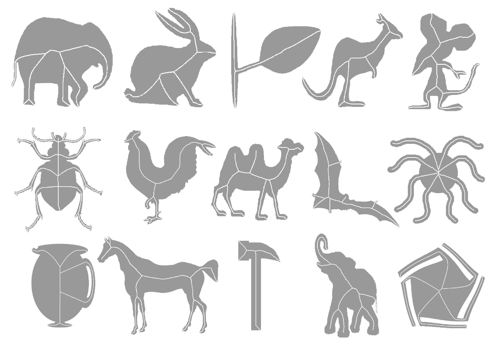
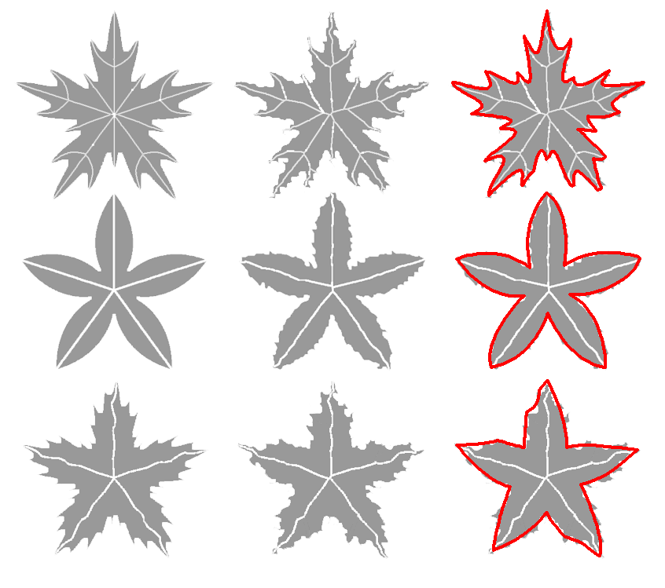
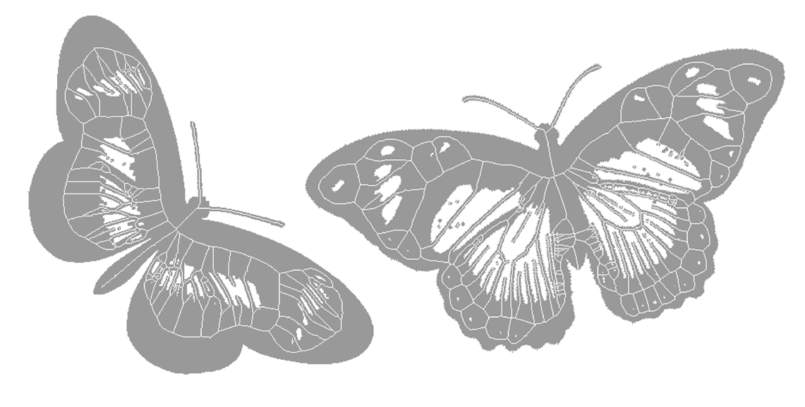
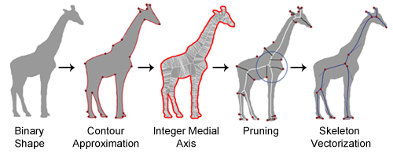

We present a new shape skeleton pruning algorithm based on contour approximation and the integer medial axis. The algorithm effectively removes unwanted branches, conserves the connectivity of the skeleton and respects the topological properties of the shape. The algorithm is robust to significant boundary noise and to rigid shape transformations, it is fast and easy to implement. High accuracy reconstruction of the shape is possible from the generated skeleton by means of the integer medial axis transform. Our algorithm also produces a vector representation of the skeleton. We compare our algorithm with state-of-the-art techniques for computing stable skeleton representations of shapes including pruning. We test and compare our solution using the MPEG-7 CE Shape-1 Part B dataset looking for skeleton connectivity, complexity, parameter selection, and accuracy/quality of the outcome. The experimental results show that our solution outperforms existing solutions according to these criteria.
The results obtained with our algorithm are stable with respect to boundary noise and rigid transformations (i.e., noisy and rotated versions of an image produce the same clean skeleton representation as the original image). Noisy branches are removed without loss of skeleton connectivity and the pruned skeleton conserves the topological properties of the shape. The algorithm’s complexity is O(kn + N); where k is the number of knots detected during the contour approximation, n is the contour length and N is the image size. It is therefore an efficient fast solution. The parameter choice has little influence on outcome, allowing the use of the same parameters for the complete test dataset of 1400 images.
Because our algorithm is robust to noise and rigid transforma- tions and it produces consistent high-quality results with the same input parameters, it can be used in semi-automatic or even automatic applications. The broad range of possible applications is also helped by the algorithm’s speed and relative ease of implementation. Because our algorithm produces a connected skeleton that is a subset of the integer medial axis of the noisy shape, the shape can be reconstructed from the skeleton using the feature transform. It should also be noted that the integer medial axis can be found efficiently in 3D and we would like to investigate an extension of our algorithm to 3D in future work.
 Figure 1. Output examples from proposed algorithm. The input parameter selection was the same for the whole dataset. The vectorization step has been skipped for display purposes.
 Figure 2.Output of our algorithm for regular and noisy images of same image class in the MPEG-7 dataset. Last is the same as middle column but with the contour approximation displayed. Parameters are unchanged.
 Figure 3. Examples of our proposed algorithm of shapes with holes using the same parameter selection.

We gratefully acknowledge the financial support from the Natural Sciences and Engineering Research Council of Canada (NSERC).
@article{ solisetal2012skeleton,
title=Skeleton pruning by contour approximation and the integer medial axis transform,
author=Andrés Solís Montero, Jochen Lang,
journal=Computers & Graphics,
year=2012,
publisher=Elsevier,
}